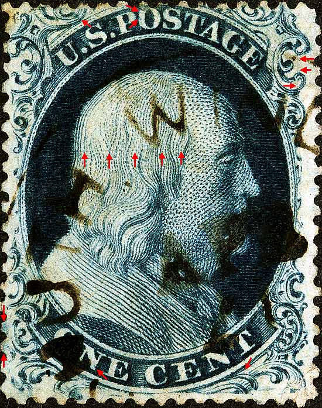
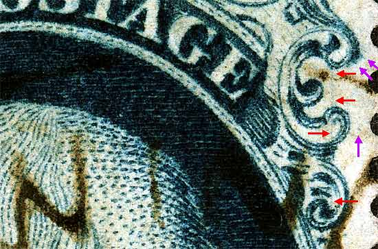
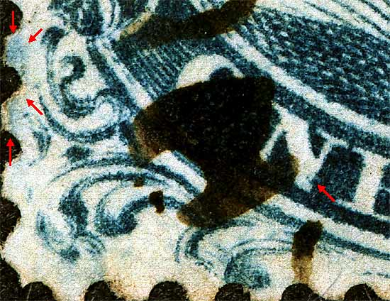
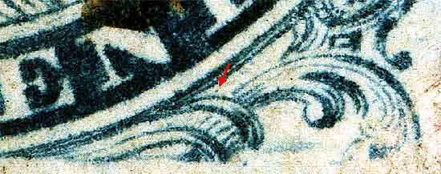
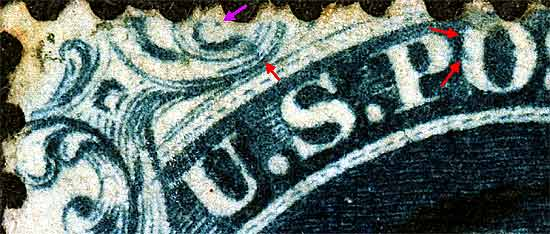

1¢ Franklin Issue of 1851-1857, PLATE 4 Pos 79L4, (Scott #21 - 22) |
| Scott # 22, Blue, Type IIIa, Relief D Issued both imperforate and perforate. Had this been an imperforate copy then it would be Scott Number 8A. (Below) The Neinken plating diagrams do not show the long horizontal scribe line cutting across the head of the portrait. This line has been confirmed on another copy. Plate 4 changed it's appearance quickly as it wore and not surprisingly many of the plating marks appeared and then quickly faded away. One of the most annoying aspects of trying to identify Plate 4 positions is the rapid change in appearance and the disappearing plating marks. Other marks of interest are indicated by violet arrows and are not shown on the plating diagrams, thus may not be consistent or reliable. Courtesy of Stanley M. Piller and Associates |
|  |
| Figure 1. (BELOW) Vertical scribe line cutting through Ornaments L, M and N.
 |
| Figure 2. (BELOW) The blur west of Ornament H and a dot in the N of ONE.
 |
| Figure 3. (BELOW) Small dot below the T of CENT.
 |
| Figure 4. (BELOW) Small blotch of color below the remains of Ornament U and marks in the O of POSTAGE.
 |
| DISCLAIMER and COPYRIGHT INFORMATION: Thanks for visiting this site. I hope you learn something new as we are making new discoveries all the time. You, the visitor, have my permission to link to my pages and to share the INFORMATION with others. The images themselves fall under the fair use guidelines established by the United States Congress and Copyright law. Basically contact us before using. I also ask in return that you send me an e-mail if I have made a mistake, or have made some other technical blunder that in my rush to put these pages up would cause the visitor confusion. Please also visit my other website at www.slingshotvenus.com. and support the live music arts. While your there, be sure to purchase our music. There are not many philatelic rock stars around and we need all the help we can get. :-) I can be reached at: nerdman@ix.netcom.com |